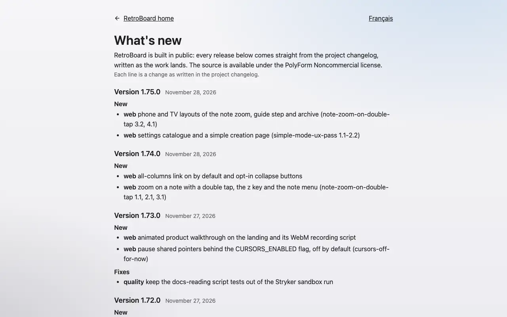
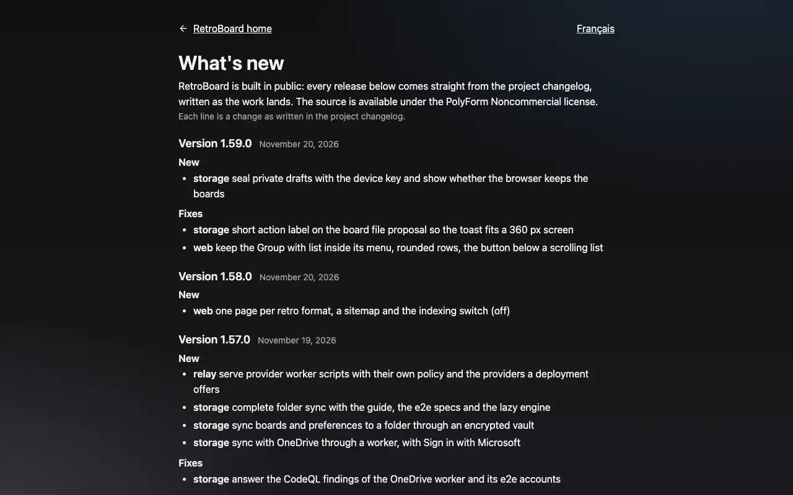

What’s new
A public page lists the latest releases, taken from the project changelog.
1 The What’s new page lists the latest releases with their date and their changes.
The page is built from the project changelog when the site is built, so it can never list a change that did not ship. Each release shows its version, its date and its changes grouped as new, fixes, performance and under the hood. The lines stay as the changelog wrote them, in English, in both languages. The page is a static file: it collects nothing and loads nothing from another site. A link at the bottom of the landing page opens it in your language, and the last link of the page leads to the full history on GitHub.

